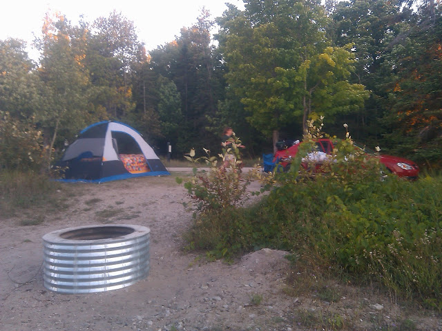

Check out these camping spots
| Electricity | Modern Restrooms | Beach Area | Hiking | Canoe/Boating | Fishing | |
|---|---|---|---|---|---|---|
| Lake Hudson | Y | Y | Y | |||
| Leelanau | Y | Y | ||||
| Grand Haven | Y | Y | Y | Y | Y | |
| Burt Lake | Y | Y | Y | Y | Y | Y |
| Highland | Y | Y | Y | Y | Y | |
| Pickney | Y | Y | Y | Y | Y | Y |
Clicking on the park name listed below takes you to the Michigan DNR's entry for that location and other services available.
Lake Hudson State Park - If you like star gazing this is the campsite for you. It is a Dark Sky Preserve. Meaning, that outdoor lighting is limited around the surrounding areas. The trees around your campsite are groomed nicely so there are no branches obscuring your view. During the day you can spend the day by the lake, fishing, or geocaching. During the night though, that is the reason to come here. The sky explodes with stars all easily viewed with the naked eye. More stars than you could ever imagine could fit into the sky. It is a great place to go to and take in the wonders of the universe. Just make sure to check the moon phase, so a full moon doesn’t ruin your view.
Leelanau State Park - In northern Michigan there is no finer camping site in my opinion. It is so far north that my phone has no signal. The campsites are large, and the trees are thick. At night it feels like you are all by yourself in the woods. It is a great camping location. Watching the sunset at the tip of the mitten is an awesome experience. Along with the panoramic views of Lake Michigan, you may also find a Petosky stone or two. It is a great campsite to “get away from it all”. Just be prepared, no modern bathrooms here.
Grand Haven State Park - If you like spending a day by the beach then Grand Haven is for you. This is a large campground with a large sandy beach area to bask in the sunshine. Cool off with a nice dip in Lake Michigan. Check out the lighthouse by the pier too. This is a great place to bring your camera. There are also numerous hiking trails to spend an afternoon in. This campground will get busy though. So be prepared to book your site well in advance to get the days that you want.
Burt Lake State Park - Snap dab in the middle of northern Michigan this campground is a good one. I have only been here once. I remember being happily surprised by modern bathrooms with showers when I did go. Something I wasn’t expecting. There are a lot of inland rivers around this area. A great place if you enjoy renting a canoe and paddling down the river.

Highland Recreation Area - In early spring this is a great camping area. This area has a lot of walking trails. These trails offer a front view showing of flowers and trees coming back to life and blooming. Spend the day hiking through the woods. There are four lakes here to explore the areas around, especially if you are into boating.
Pickney Recreation Area - – What I like most about Pickney Recreation area is their trail system. They have over 40 miles of trails. These trails are great for mountain biking or hiking through. Don’t be surprised if you see someone on horseback though. There are equestrian trails here too. This campground is a little different than others on the list. They do have campgrounds, but you have to hike in to get to them. So pack light. You can also rent a cabin or park an RV if you don’t feel like roughing it.